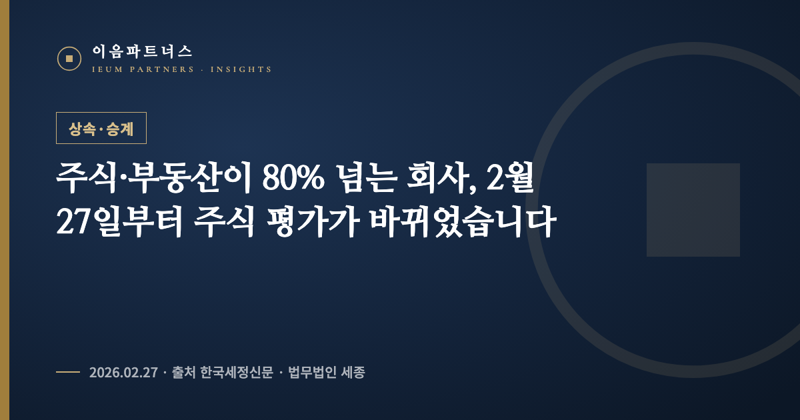

주식·부동산이 80% 넘는 회사, 2월 27일부터 주식 평가가 바뀌었습니다

다른 회사 주식을 주로 가진 지주회사형 법인이나 건물·토지를 주로 가진 부동산 임대 법인은 그동안 주식을 순자산가치(회사 자산에서 부채를 뺀 값)로만 평가해 왔습니다. 2026년 2월 27일부터 상속세 및 증여세법 시행령이 바뀌면서 이런 회사의 주식 평가 방법이 달라졌습니다. 이 글에서는 무엇이 바뀌었는지, 그리고 지분 증여나 승계를 앞둔 대표님이 무엇을 다시 계산해야 하는지 정리합니다.
바뀐 방식은 예전보다 평가액이 같거나 높게 나오는 구조여서, 예전에 계산해 둔 숫자로 증여 계획을 세웠다면 다시 확인이 필요합니다. 우리 회사가 대상인지 궁금하시면 카카오톡 채널 이음파트너스에서 함께 확인해 볼 수 있습니다.
무엇이 바뀌었나
비상장주식은 시가가 없으면 1주당 순손익가치(회사가 벌어들인 이익을 바탕으로 한 가치)와 순자산가치를 가중평균해 평가합니다. 다만 자산총액 가운데 부동산이나 주식 비중이 80% 이상인 법인은 그동안 이익과 관계없이 순자산가치로만 평가했는데, 이번 개정으로 이 규정이 삭제되고 가중평균한 값과 순자산가치 중 큰 금액으로 평가하도록 바뀌었습니다(한국세정신문, 법무법인 세종).
| 구분 | 내용 |
|---|---|
| 일반 법인 (그대로) | 순손익가치와 순자산가치를 3:2로 가중평균한 값과 순자산가치의 80% 중 큰 금액 |
| 부동산 과다보유 법인 (그대로) | 순손익가치와 순자산가치를 2:3으로 가중평균한 값과 순자산가치의 80% 중 큰 금액 |
| 주식 비중 80% 이상 법인 | 종전 순자산가치로만 평가 → 3:2 가중평균한 값과 순자산가치 100% 중 큰 금액 |
| 부동산 비중 80% 이상 법인 | 종전 순자산가치로만 평가 → 2:3 가중평균한 값과 순자산가치 100% 중 큰 금액 |
| 시행 | 2026년 2월 27일, 시행일 이후 평가하는 분부터 |
개정 내용은 “영 시행일 이후 평가하는 분부터 적용”됩니다(한국세정신문). 대체로 2026년 2월 27일 이후 상속이 시작되거나 증여하는 주식부터 새 방식이 쓰인다고 볼 수 있으니, 정확한 적용 시점은 세무사와 확인하시길 권합니다.
우리 회사에는 어떤 영향이 있을까
새 방식은 순자산가치와 가중평균한 값 가운데 큰 값을 택하므로 평가액이 예전보다 낮아지지는 않습니다. 회사가 꾸준히 이익을 내 순손익가치가 순자산가치보다 높다면 평가액이 예전보다 올라갈 수 있습니다. 반대로 이익이 적은 회사는 예전처럼 순자산가치로 평가될 가능성이 큽니다.
함께 바뀐 내용도 있습니다. 특수관계인에게 비상장주식을 증여받은 뒤 그 주식이 코넥스시장에 상장돼 가치가 오르면 그 이익도 증여로 보도록 했고, 가상자산은 감정가액을 시가로 인정하지 않도록 했습니다(법무법인 세종).
대표님이 지금 확인할 것
- 회사 자산총액 가운데 부동산과 다른 회사 주식이 각각 몇 %인지 먼저 확인하세요.
- 80% 이상이라면 회사 이익을 바탕으로 순손익가치를 계산해, 새 방식에서 평가액이 얼마나 달라지는지 비교해 보세요.
- 2026년 2월 27일 이전 기준으로 세운 증여·승계 계획이 있다면 세무사와 함께 다시 계산하시길 권합니다.
참고한 자료
- 2025년 세법 시행령 개정안-상속세 및 증여세법 — 한국세정신문 (2026.01.27)
- Tax Guide - Legal Update (2026년 상증세법 시행령 개정사항) — 법무법인 세종 (2026.05.07)
우리 회사 주식 평가액이 어떻게 달라지는지 궁금하시다면 카카오톡 채널 이음파트너스로 편하게 문의해 주세요.
※ 이 글은 일반적인 정보 제공을 위한 것으로, 개별 사안은 세무사·노무사 등 전문가와 함께 확인하시기 바랍니다.